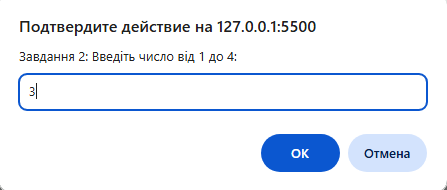
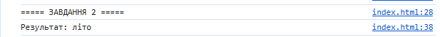

console.log("===== ЗАВДАННЯ 2 ====="); let seasonNumber = prompt("Завдання 2: Введіть число від 1 до 4:"); let result; switch (seasonNumber) { case "1": result = "зима"; break; case "2": result = "весна"; break; case "3": result = "літо"; break; case "4": result = "осінь"; break; default: result = "невідоме значення"; } console.log(`Результат: ${result}`);

